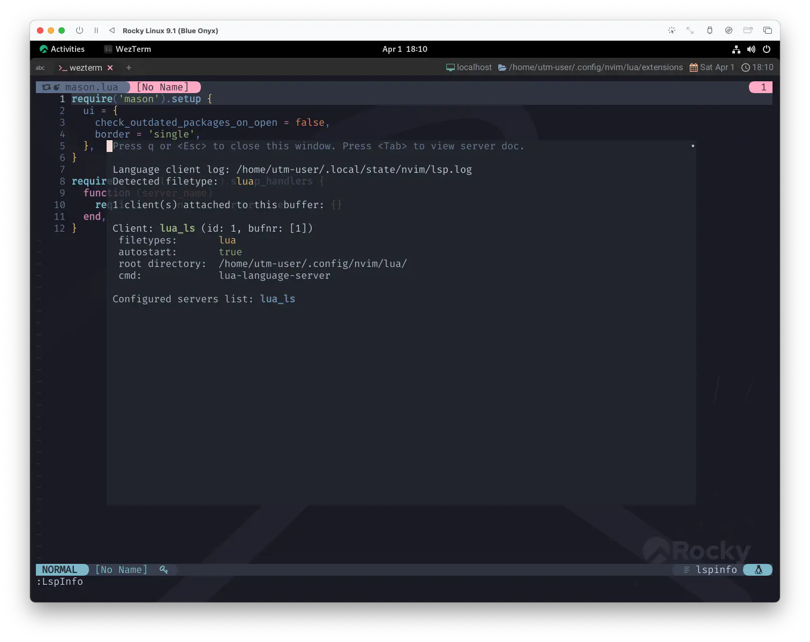
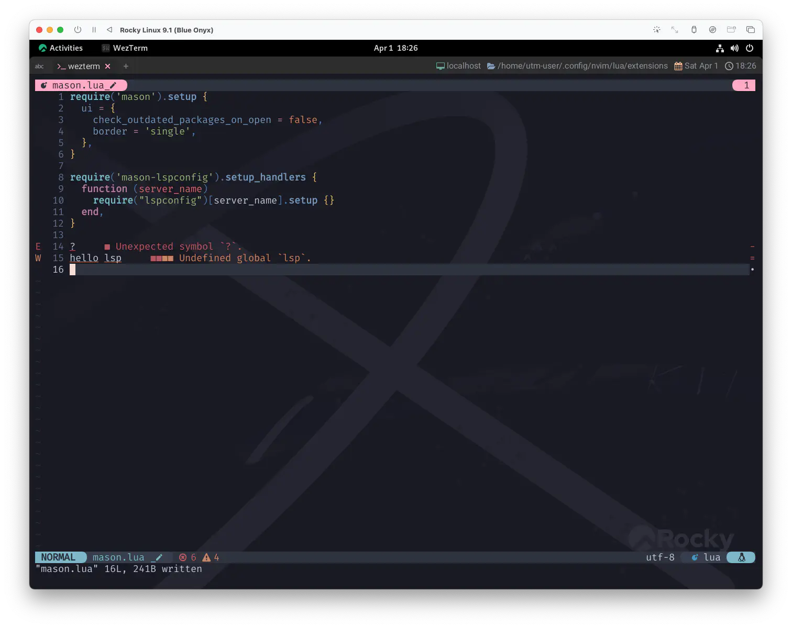
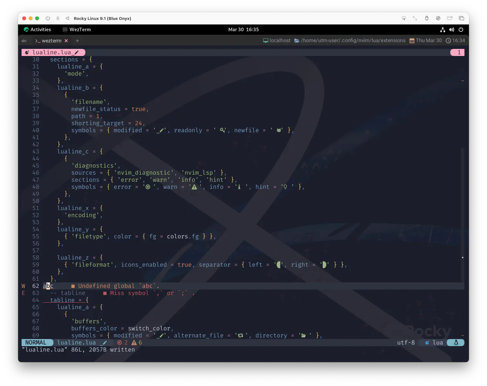

mason-lspconfig.nvim
わかる人には既に色々見透かされているとは思ってますが、そんなものは気にせず、ど真ん中をぶっちぎります❗
mason-lspconfig.nvimのお通りだー❗
mason-lspconfig bridges mason.nvim with the lspconfig plugin - making it easier to use both plugins together.
mason-lspconfig は mason.nvim と lspconfig プラグインを橋渡しし、両プラグインを一緒に使うことを容易にするものです。
:help mason-lspconfig.nvim
なんだかとってもややこしいですね😑
This ain't song for the broken-hearted
心に傷を負った者のために これを歌うわけじゃない
Install
これはmason.nvimとセットで入れておきましょう。
use {
'williamboman/mason.nvim',
config = function() require 'extensions.mason' end,
+ requires = {
+ 'williamboman/mason-lspconfig.nvim', 'neovim/nvim-lspconfig',
+ }
}
nvim-lspconfigも呼び出す必要があるので、これもプラスで❗
Config
で、これに関するコンフィグもmason.luaにまとめちゃいます。
require('mason').setup {
ui = {
check_outdated_packages_on_open = false,
border = 'single',
},
}
-- ここに追記
require('mason-lspconfig').setup_handlers {
function(server_name)
require('lspconfig')[server_name].setup {}
end,
}
これだけです❗マジです。地味ながらとっても重要なやつです。
ドッジボールで言ったらキルア 1 です❗
ただこれ...、かけるオーラの比率をほんの少しでも間違えると途端にアウトなので、 だいぶ気をつけて使ってください...。
mason-lspconfig.setup_handlers()
setup_handlers({handlers})
Advanced feature
This is an advanced, opt-in, feature that requires some careful
reading of the documentation.
これは、高度なオプトインの機能であり、いくつかの慎重さが必要です。
ドキュメントを注意深く読む必要があります。
The recommended method to set up servers with lspconfig is to do so by
following their guides, see lspconfig-quickstart.
lspconfigでサーバをセットアップするには、
lspconfig-quickstartを参照して、そのガイドに従って行うことが推奨されます。
Registers the provided {handlers}, to be called by mason when an installed
server supported by lspconfig is ready to be set up.
lspconfig がサポートするインストール済みサーバーのセットアップが完了したときに mason から呼び出される {handlers} を登録する。
When this function is called, all servers that are currently installed
will be considered ready to be set up. When a new server is installed
during a session, it will be considered ready to be set up when
installation succeeds.
この関数が呼び出されると、現在インストールされているすべてのサーバーがセットアップ可能な状態にあるとみなされる。
セッション中に新しいサーバーがインストールされた場合、インストールに成功した時点でセットアップの準備ができたとみなされます。
{handlers} is a table where the keys are the name of an lspconfig server,
and the values are the function to be called when that server is ready to
be set up (i.e. is installed).
{handlers}は、キーがlspconfigサーバーの名前で、
値がそのサーバーがセットアップの準備ができた（すなわちインストールされた）ときに呼び出される関数であるテーブルです。
推奨される方法はこれではなくて他にあるので、「使う場合は注意してね😉」ってことです。
例えば、それはもうめちゃくちゃ言語プロフェッショナルが扱う場合は、setup_handlers()は使用せずに、個別にやったほうがきっちりできるはずです。
...ただ、そうでもない場合、言語ごとに一個一個の設定をしていかなきゃならないってなると、
mason.nvimが提供してくれるお手軽さが、かなり損なわれてしまいます。
でも、それではあまりにも勿体ないので、 これを理解した上で使用する分にはいいんじゃないかな〜って思うことにします❗そうします😆
It's my life!
これが俺の人生だ！
My heart is like an open highway
Like Frankie said
I did it my way
俺の心は まるで見通しの良いハイウェイだ
フランキーが歌ったように
俺は 俺の道を歩むんだ
For the ones who stood their ground
ここまで来れば、ついにLSPでお話ができます❗がんばったね🤗
This is for the ones who stood their ground
For Tommy and Gina who never backed down
この歌は 信じて立ち向かった者達に捧げる
決して一歩も引かなかった トミーとジーナのために
LspInfo
試しに、適当なluaファイルを開いて
:LspInfo
としてみましょう。 
うわっ❗めっちゃお話ししてくれそう🥰
Signature Help
じゃあ、試しにluaファイルに記述されているrequireにカーソルを持っていって、Ctrl-kとしてみましょう。
めっちゃ教えてくれる😆
Diagnostics
なんか嬉しくなってきたので、次はコードにイタズラをしてみましょう。 
やーい怒られたぁ🤣
lualine
Diagnositcsに関連して、もう一個やっておきましょう。おもむろにlualine.luaを開いて、こんなのを入れてみましょう。
sections = {
-- (中略)
lualine_c = {
{
'diagnostics',
sources = { 'nvim_diagnostic', 'nvim_lsp' },
sections = { 'error', 'warn', 'info', 'hint' },
symbols = { error = ' ', warn = ' ', info = ' ', hint = '' },
},
},
-- (中略)
}
ってやってから、またちょっかい出してみると...❓ 
lualine上にErrorやWarningの数が表示されるようになりましたね❗
I'll take you all.
だいぶ歩いてきました。
これさえやっておけば、他の言語のLSPを追加したくなった時も "基本的には" masonを操作するだけで良くなります。
結構な達成感じゃないでしょうか☺️
しかし、この章の冒頭にある綿密なロードマップでも示されていましたが、これはまだ序盤です。
やるのかい やらないのかい
どっっちなんっっだいっ❗❗ 2
やーーーーーーーーーーーるっ💪
"世界一のワガママ" の実現を目指して😆 パワー❗❗
Better stand tall when they're calling you out
Don't bend, don't break, baby, don't back down
呼ばれたら立ち向かえ
自分を曲げるな、挫けるな、それから、一歩も引くなよ
1: HUNTER X HUNTER です
2: なかやまきんに君です
3: It's My Life (by Bon Jovi): 2番の歌詞にある「決して一歩も引かなかった トミーとジーナのために」というセリフは、 1986年のヒット曲 "Livin' on a Prayer" で初めて登場した架空のカップルを指している。 また、同じ New Jersey 州の Frank Sinatra に言及した詩が特徴。 Bon Jovi は次のように回想している。 「Sinatra は16本の映画を作り、80歳までツアーをした。これは俺のロールモデルだ 」と言ったら、 「そんな詞は書くなよ。君以外、誰も Sinatra のことなんて気にしていないんだから」と Sambora に言われた。 それでもとにかく書いてみたんだ。Wikipediaより